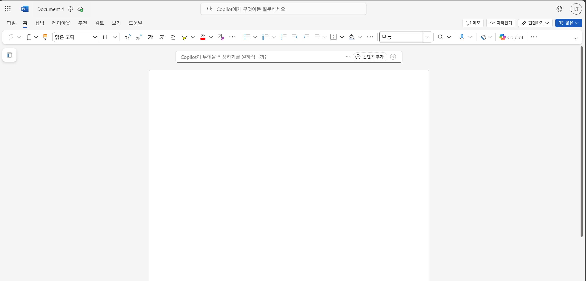
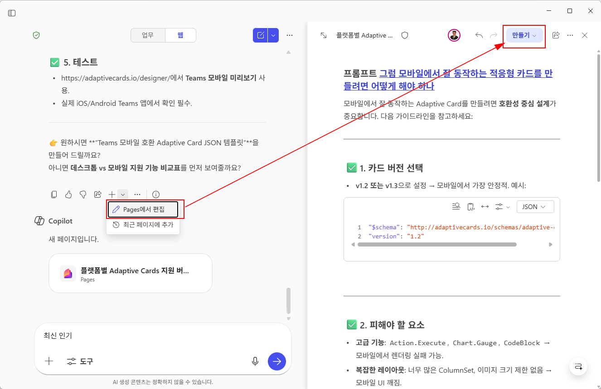

Stage3. Copilot의 숨겨진 능력을 열어보세요!
지금까지 Word를 사용할 때, 대부분 단순 요약이나 초안 작성만 사용하셨다구요? 하지만 Copilot은 그 이상을 할 수 있습니다!
이번 미션에서 문서 비교, 변경사항 정리, 보고서 자동 생성까지! Copilot의 숨겨진 능력을 직접 경험해보세요.
Tip ▶ 기호가 있는 설명을 클릭하면 숨겨진 이미지를 열어보실 수 있습니다.
-
Word를 실행하고 빈문서를 엽니다.

- 다음의 링크로 이동하여 에서
"정보보호 공시에 관한 고시" 2개의 파일을 다운로드 합니다.
- 아래의 샘플 프롬프트를 입력합니다.
1️⃣ 첫번째 단계, 문서 비교(표 중심)
- 코파일럿의 Work Chat에 접속합니다. https://m365.cloud.microsoft/chat/
- 두 개의 문서를 업로드합니다.
- 두 개의 문서를 비교하고, 변경된 조항을 표 형식으로 깔끔하게 정리하기 위해 아래의 프롬프트 실행합니다.
- 코파일럿이 제공하는 답변을 확인하고, 나의 업무에 어떻게 도움이 되는지 생각해 봅니다.
💠 (첨부파일1), (첨부파일2) 변경된 공시에 대해 직원들에게 안내 예정입니다.
각 조항을 모두 나열하고, 변경된 내용이 있는 경우 명확하게 이해할 수 있도록 자세히 설명하고,
변경내용이 없는 경우 "변경없음"으로 표기합니다.
표 형태로 작성하고, 조항, 변경전, 변경후, 변경항목, 변경에 대한 설명 컬럼을 포함합니다.
2️⃣ 두번째 단계, 문서 비교 (보고서 스타일)
- 코파일럿의 Work Chat에 접속합니다. https://m365.cloud.microsoft/chat/
- 두 개의 문서를 업로드합니다.
- 두 개의 문서를 비교하고, 변경된 조항을 비교하여 결과는 즉시 활용 가능한 안내문 형태로 생성합니다.
- 아래의 프롬프트 실행 후, 코파일럿이 제공하는 답변을 확인하고, 나의 업무에 어떻게 도움이 되는지 생각해 봅니다.
💠 (첨부파일1), (첨부파일2) 변경된 고시에 대해 사용자들에게 안내 예정이야.
각 조항을 모두 나열하고, 변경된 내용이 있는 경우 명확하게 이해할 수 있도록 자세히 설명해줘.
다음 형식으로 출력해줘.
---
1. 개요
2. 변경 요약
3. 조항별 세부 내용
|조항|변경 전 내용|변경 후 내용|변경내용|변경에 대한 설명|
4. 시사점
3️⃣ 세번째 단계, 보고서 제출하기
이렇게 만들어진 문서(보고서)를 워드파일로 저장하여, 아래의 링크를 통해 제출해 주세요.
워드파일명은 "alias_stage3.docx"로 저장하여 업로드 해주세요.
Tip ▶ 아시나요? 코파일럿의 답변을 페이지로 옮기면 바로 워드 파일로 만들 수 있다는 것을..

🗝️ 수고하셨습니다. 던전관리자가 다음 스테이지로 가는 암호를 정해진 시간에 공지할 것입니다.